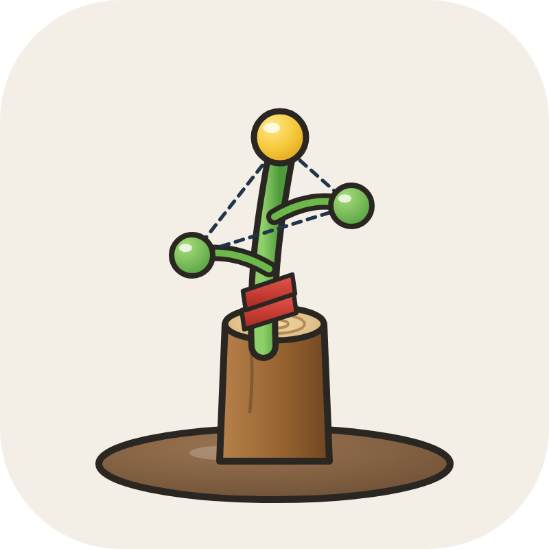

Khaled Abuela · CSC 595 research project template
Hospital care in Canada is already short on time: in 2024–25, about 1.5 million emergency patients waited more than 14 hours , while doctors lose 18.5 million hours a year to unnecessary paperwork . Agents could take on the coordination between patients, MOAs, nurses and doctors, but giving each role its own agent adds failure points and lets the agents fall out of sync . A single shared agent avoids this, yet it then has to hold a long, changing history in which roles often record conflicting facts, and current models miss facts buried in long contexts and struggle to resolve outdated or inconsistent ones . As a result, no existing setup gives every role one consistent, up-to-date view of the patient.
Long waits, and doctors buried in paperwork.
More failure points. Agents fall out of sync.
Forgets the long history and can’t tell which version of a fact is current.
Agents cannot keep a full history in context, so they forget, and the field’s main answer to this is retrieval, through RAG and agent memory systems. These methods, however, assume the stored facts agree with each other, while a patient’s record does not: an allergy noted by a nurse may later be corrected, as in a penicillin case. HippoRAG 2, among the strongest retrieval methods on MemoryAgentBench, illustrates the gap: on multi-hop FactConsolidation, which tests exactly these changing facts, it scores only 5% with GPT-4o-mini . Retrieval alone therefore cannot give an agent a reliable, up-to-date memory of a patient.
HippoRAG 2 on multi-hop FactConsolidation. Its lowest score in the whole table, while it has the best overall score of all retrieval and memory agents.
We propose GRAFT, a graph memory that the agent grafts onto rather than builds from scratch. Like grafting a branch onto an established plant, GRAFT gives the model a fixed structure to extend: a ready-made guide graph with its relations and supersede rules already in place, which the model copies as it writes every new fact with its source and time, so a newer fact supersedes the older one. This plays to what large language models do best, following an existing pattern rather than inventing structure from nothing, as schema-free methods such as HippoRAG 2 ask them to . At question time, a graph neural network selects the few current facts the agent actually reads. In our tests, GRAFT reaches 56.7% on FactConsolidation, against 18.3% for BM25 retrieval without a graph .
We start with FactConsolidation because it tests what clinical records demand: facts that change and conflict over a long history, as when an allergy is later corrected. There, GRAFT reaches 56.7% against 18.3% for BM25. Since handling conflicting facts doesn’t guarantee answering ordinary ones, we then run the full MemoryAgentBench, covering plain retrieval, test-time learning and long-range understanding, against HippoRAG 2 and BM25 on the same model. We compare against HippoRAG 2 because it has the highest overall score among the retrieval and memory methods on MemoryAgentBench , and against BM25 as the simple baseline without a graph. Finally, we move to clinical data: our clinic partner’s records cannot yet be reported, so we have applied for access to Stanford’s EHRSHOT and MIMIC as public benchmarks.
Multi-hop FactConsolidation, 100 questions, 3 runs.
Done · 56.7 vs 18.3Retrieval, test-time learning, long-range understanding, conflicts. Against HippoRAG 2 and BM25.
NextEHRSHOT (Stanford) and MIMIC, once access is granted.
Access applied forGRAFT is a general memory and retrieval technique: by grafting the agent onto a guided graph, it can be adapted to any application, keeping memory current as facts change while aiming to beat leading methods across short-term, long-term and conflicting memory.
Models miss facts in the middle of long inputs . Every method scores at most 28% on multi-hop conflicts .
HippoRAG 2 (PageRank over a schema-free graph), GFM-RAG (pretrained GNN retriever), G-Retriever, GNN-RAG, SubgraphRAG.
A-Mem rewrites notes, Text2Mem names memory operations, plus Mem0 and Zep.
MedGraphRAG, EHRNoteQA and EHRSHOT: medical, but mostly static questions, not one patient over time.
GOAt and EiG-Search show which part of a graph drives a GNN’s output.
Does Memory Need Graphs? says gains come from settings, not the graph. SubgraphRAG says a simple scorer may be enough.
No method combines writing onto a ready-made guide graph, superseding outdated facts and explainable GNN retrieval, tested on changing facts. Medical memory benchmarks are rare and mostly static.
Multi-hop FactConsolidation, accuracy % of 100 questions. HippoRAG 2 on Haiku is a single run.
In 20 hand-checked misses, the fact was never written or was ranked too low. The model never ignored a fact it was shown.
GRAFT leads on conflicting facts and at least matches HippoRAG 2 on plain retrieval across the full MemoryAgentBench, with the same pattern on clinical data.
The real HippoRAG 2 on Qwen, and a same-day rerun of the two best GRAFT settings.
Yes, if GRAFT beats HippoRAG 2 on the same model across the full MemoryAgentBench and holds on clinical data.
A table of the four MemoryAgentBench abilities for GRAFT, HippoRAG 2 and BM25, plus a medical column. A chart of accuracy as history grows from 6K to 262K tokens.
Full MemoryAgentBench on Qwen, 3 same-day runs. Then MedMemoryBench (100 questions, 10 patients), EHRSHOT and MIMIC.
Freeze the best setting, run the real HippoRAG 2 on Qwen, check the judge’s cost, finish credentialing. Target: ICLR, September 2027.